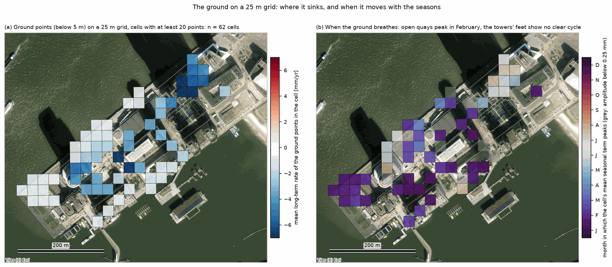

Buildings and ground
Four questions about the pier itself, asked when the supervisor went through the first nineteen plots, and what the data says to each. They matter for the method because everything the buildings and the ground do on their own ends up in the height gradient.
One ground point in figure 02 moves with the seasons, peaking in winter, opposite to the buildings. Is that one point, or do all the ground points do it?
Every point below 5 m above ground with coherence above 0.6, 3 369 of them, was grouped by its distance to the nearest tall building, and the mean series of each group was fitted for a yearly wave after removing offset, trend and curvature per point. The 25 m cell map (figure 25) and the phase map (figure 27) show where the cycle is.
It is not one point. The open ground as a whole moves towards the satellite in winter and away in summer, by 0.5 to 0.8 mm, peaking in mid-February. But the 1 500 ground points within 30 m of a tower show almost no cycle at all (0.1 mm). Per point, 48 % peak between November and February and 30 % between May and September. The cause is open. Three candidates, none excluded by one track alone:
- The reference point. All displacements are relative to one reflector. If it sits on a building that expands in summer, every other point inherits the mirror image, and the ground, with little motion of its own, would show it most clearly. Against it: a pure mirror would peak around day 28, the open ground peaks on day 45, and the points at the towers' feet show nothing.
- The near-surface refractivity cycle. The lowest 100 m above De Bilt are 11 N-units more refractive in mid-August than in February; for a ground point that is 1.2 mm of seasonal delay per 100 m of height difference to the reference point, in exactly this phase. Knowing the reference point's height would settle how much of the cycle this explains.
- Real motion of the fill. The pier is fill over Holocene clay and peat; it also sinks at 2.5 to 4 mm a year next to buildings that do not, and groundwater peaks in February and March. The plinths at the towers' feet may simply be rigid.
One test separates the first two from the third: the ascending track, which would flip the horizontal part of any building motion and nothing else. One fact settles most of it: where the reference point is, how high, and on what.
The spatial pattern is what argues hardest against a reference point on an expanding building: a mirror image would be the same everywhere, and it is not. Whether the fill breathes or the air does is the question we most want to put to the ascending track.


The year clock animates the same cycle.
Some ground points sink at 0 to 9 mm a year. Where are they? Is it a pattern or scatter?
The ground points were put on the aerial image coloured by their long-term rate (figure 20), and on a fixed 25 m grid, one mean per cell with at least 20 points (figure 25).
A pattern, in areas. The quartiles of the ground rate are −3.6, −1.2 and −0.6 mm per year, so a quarter of the ground sinks faster than 3.6 mm a year; 22 % faster than 4. The south-west tip around the 1900 hotel is stable (about −0.5), the middle of the pier sinks at 1 to 3.5 mm a year, the north-east end around the 2013 and 2017 towers at 6 to 7. In 50 m cells the spread between cells (2.0 mm/yr) is twice the spread inside them (1.1): areas, not scatter. Next to every building the pavement sinks at 2.5 to 4 mm a year whatever the building's age. What it does not show is the cause: the age of the fill, the loads of the new towers and their underground garages are all candidates.
The north-east end is the newest fill carrying the newest and heaviest towers; that the pavement sinks faster than the towers standing on piles is what one would expect if the fill itself is still consolidating.


Look at it per building: which are sinking, which are shrinking, what year were they built, is the old hotel from 1900 still moving, and is it the roads?
The points were joined to the outlines of the national building register (BAG, via PDOK), which also carry the construction year; points just outside an outline and above 5 m were attached to the nearest facade within 10 m. Per building: the mean rate of its points, the change of rate with height (tilt), the curvature, the seasonal term, and the rate of the pavement within 15 m.
The supervisor's ordering holds: the newer the tower, the faster it still sinks and the more it is slowing down. Structure rates by construction year: 2000 −0.9, 2005 −1.2, 2010 −2.3, 2013 −3.8, 2017 −3.7 mm per year; curvature +0.02, +0.02, +0.10, +0.24, +0.24 mm per year squared (positive means decelerating). Hotel New York (1900) has stopped: 196 points at −0.6 mm per year with no curvature, while the pavement around it sinks at −2.5. So it is the ground, not the roads as such: next to every building the pavement sinks at 2.5 to 4 mm a year, and only the two newest towers sink about as fast as their surroundings. The tilt, rate against height within a building, is −0.7 to −4.9 mm per 100 m per year, largest for the newest: the supervisor's reading of it as shrinkage of young concrete is plausible, and a height error leaking into the velocity in the radar processing is the alternative only its producer can weigh.
For the two newest towers, sinking together with their surroundings and slowing down looks like consolidation under load; the tilt on top of it, largest for the youngest concrete, fits shrinkage. The names other than De Rotterdam and Hotel New York are our guess from the aerial image.


Two points seven metres apart on one facade differ less in their yearly swing than pure vertical expansion predicts. Could the building also expand sideways, especially the wide ones oriented west to east?
Seen from the east-south-east, the satellite sees 0.385 of any eastward motion. A structure that expands sideways about a fixed point should show a seasonal term that grows with easting, at +0.015 mm per metre for a 4 K temperature swing. The seasonal term was regressed on easting, northing and height in overlapping 25 m windows, per building, and per connected group of ground points.
Yes. Inside buildings the seasonal term grows with easting at +0.011 mm per metre (median), positive in 74 % of the windows and for all eight buildings with most points, against +0.015 expected for free expansion: the buildings expand sideways at about 70 % of free. The vertical slope inside buildings is +0.037 mm per metre, which is a 4 K swing on the nose, against 7 K in the air. On the open ground the slopes have both signs, so the ground is not one expanding slab. It does not resolve which fixed point a building expands about, and the ascending track would flip this term and nothing else, which makes it a clean test.
Seventy per cent of free expansion is what one would expect of a structure tied to its foundation and its neighbours; the puzzle of the two points on one facade is at least partly this. The ascending stack is the one test that settles it, and it is worth asking for now.

What this means for the retrieval
- The ground is not a clean zero. Its 0.4 to 0.8 mm yearly term is the size of the stratification signal, and its cause is open. Until the reference point is known, the lowest bin carries an unknown seasonal term.
- Per building, the nuisance model is rate = a + b·height and seasonal term = c + d·height + e·easting, with a, b, c, d and e fitted per building. The tilt b is −0.7 to −4.9 mm per 100 m per year, largest for the newest; e is about +0.011 mm per metre.
- The pieces others could take: the ascending stack, a groundwater series for the pier, and the building-register join for the whole city.